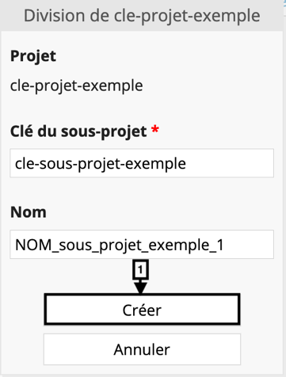
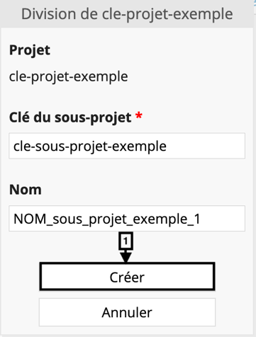
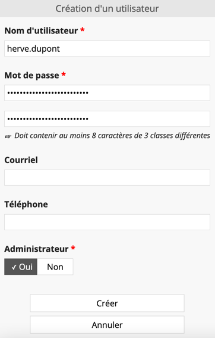
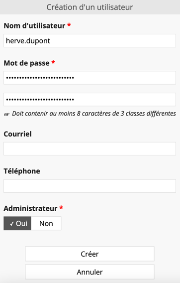

Présentation générale
Goupile est un outil de conception de cahier d'observations électroniques ou electronical Clinical Report Forms (eCRF). Il s'agit d'une application web multiplateforme et multisupport destinée à recueillir les informations définies par le protocole de recherche clinique.
Apport des eCRF
L'eCRF est le versant électronique du CRF papier traditionnel. L'eCRF permet le recueil des données en ligne par les investigateurs et les attachés de recherche clinique (ARC).
Ses apports principaux sont multiples :
- Centralisation et simplification de la saisie : la saisie des données se réalise en ligne sur un portail d'accès sécurisé et via un formulaire électronique adaptée à l'étude
- Sécurisation du recueil : les données sont hébergées sur un serveur sécurisé et accessibles uniquement aux personnes autorisées
- Contrôle de la cohérence et optimisation de la qualité des données : des masques de saisie et des contrôles de cohérence internes paramétrables et automatisés limitent les erreurs de saisie
- Suivi de l'exhaustivité des données et monitoring du recueil : le contrôle du recueil est assuré via l'implémentation de tableau de bord, d'indicateurs de suivi et d'un journal d'audit (audit trail) consultables à distance.
Apport de Goupile
Goupile est un éditeur en ligne d'eCRF entièrement configurable par l'utilisateur via une interface simplifiée et disposant de fonctionnalités avancées.
Goupile est une solution multiplateforme (ordinateur, tablette, smartphone) et multisupport (Windows, Linux, Mac Os X, Androïd, iOS…). Goupile est compatible sur tout navigateur web récent (Google Chrome, Mozilla Firefox, Microsoft Edge, Safari…).
Goupile peut être déployé sur le serveur souhaité par l'utilisateur mais propose également un hébergement sur un serveur certifié Hébergeur de Données de Santé (HDS) [GPLExpert].
Il s'agit d'un logiciel libre et opensource délivré sous licence libre : licence AGPL 3.0. Le code source est disponible gratuitement en ligne : https://framagit.org/interhop/goupile.
Administration globale
Interface d'administration
Cette interface vous permet de créer et gérer vos projets, d'ajouter des utilisateurs, de configurer leurs droits et d'archiver vos projets.
Authentification

L'authentification se réalise via le portail de connexion présenté ci-dessous. Le nom d'utilisateur et le mot de passe sont transmis par e-mail. Le nom d'utilisateur est généralement (par convention) au format « nom.prenom ». Après la saisie du nom d'utilisateur et du mot de passe, cliquez sur « Se connecter ».
Aperçu
La page d'accueil se présente sous la forme suivante. Elle peut être schématiquement décomposée en 3 parties. Le bandeau [1] vous permet de configurer l'affichage de la page. Vous pouvez afficher (ou non) un ou deux panneaux en sélectionnant (ou déselectionnant) le(s) panneau(x) d'intérêt. Par défaut, les panneaux « Projets » [2] et « Utilisateurs » [3] sont sélectionnés.

Projets
Le panneau de configuration « Projets » vous permet de créer un nouveau projet (« Créer un projet »), le diviser en sous projet, configurer les paramètres généraux et y affecter des utilisateurs avec différents droits.
Utilisateurs

Le panneau de configuration « Utilisateurs » vous permet de créer un nouvel utilisateur (« Créer un utilisateur »), modifier les paramètres d'un utilisateur (« Modifier ») et assigner les droits d'un utilisateur sur un projet donné.
Archives
Le panneau de configuration « Archives » vous permet de créer une nouvelle archive (« Créer une archive »), restaurer (« Restaurer »), supprimer (« Supprimer ») ou charger (« Uploader une archive ») une archive.
Une archive enregistre l'état des (formulaires et données) au moment où elle est créée. Une fois l'archive créée, vous pouvez télécharger le fichier créé (avec l'extension .goupilebackup) et le stocker à l'abri par un moyen adéquat.
Attention, pour pouvoir restaurer ce fichier, vous devez conserver la clé de restauration qui vous a été communiquée lors de la création du domaine. Sans cette clé, la restauration est impossible et les données sont perdues. Par ailleurs, il nous est strictement impossible de récupérer cette clé si vous la perdez.
Changement de mot de passe


Pour changer votre mot de passe, cliquer sur l'icône du menu déroulant à côté de votre nom d'utilisateur [1] puis sur « Changer le mot de passe » [2]. Le nouveau mot de passe doit contenir au moins 8 caractères de 3 classes différentes (numériques, alphanumériques, symboles spéciaux).
Déconnecter la session

Pour déconnecter votre session, cliquer sur l'icône du menu déroulant à côté de votre nom d'utilisateur [1] puis sur « Se déconnecter » [2].
Création d'un projet
Pour créer un nouveau projet, il faut se connecter sur l'interface administrateur, afficher le panneau de configuration « Projets » [1] puis cliquer sur « Créer un projet » [2].
Une nouvelle fenêtre apparaît (« Création d'un projet »). Vous devez y définir une clé de projet (« Clé du projet »), un nom de projet (« Nom ») et vous aurez le choix pour ajouter (ou non) des pages par défaut (« Ajouter les pages par défaut »).
La clé du projet apparaîtra dans l'URL de connexion au projet. Son format doit être alphanumérique et ne peut excéder 24 caractères. Les majuscules, les accents et les caractères spéciaux ne sont pas autorisés (sauf le tiret court ou tiret du 6, ‘-‘). Le nom du projet correspond au nom que vous souhaitez donner à votre projet. Son format peut être numérique ou alphanumérique. Les majuscules et les caractères spéciaux sont autorisés. Les « pages par défaut » permettent l'ajout de quelques pages d'exemple vous permettant de vous familiariser avec la conception d'un eCRF avec Goupile et fournissent une première base de travail. Si vous êtes déjà familier avec la conception d'un eCRF avec Goupile, vous pouvez cliquer sur « non ». Après avoir saisi les différents champs, cliquer sur « Créer » [1].


Une fois votre projet créé, plusieurs menus sont disponibles via le panneau de configuration « Projets » : « Diviser » [1], « Droits » [2], « Configurer » [3] et « accès » [4].
Par défaut, les projets sont mono-centriques. Pour transformer un projet mono-centrique en projet multi-centrique, vous pouvez utiliser l'option « Diviser ».
L'option « Diviser » vous permet de subdiviser votre projet initial en différents sous-projets. Une nouvelle fenêtre apparait « Division de *votre clé de projet* ». Vous devez alors renseigner une clé de sous-projet (« Clé du sous-projet ») et un nom de sous-projet (« Nom ») selon les mêmes contraintes que celles mentionnées pour la clé et le nom du projet. Après avoir saisi les différents champs, cliquer sur « Créer » [1].

 

Une fois votre sous-projet créé, plusieurs menus sont disponibles via le panneau de configuration « Projets » : « Droits », « Configurer » et « accès ».
L'option « Droits » vous permet de créer un nouvel utilisateur (« Créer un utilisateur »), modifier les paramètres d'un utilisateur (« Modifier ») et assigner des droits à un utilisateur (« Assigner ») pour votre projet (ou sous-projet selon la sélection réalisée).
L'option « Configurer » vous permet de modifier les paramètres de votre projet (« Modifier ») ou supprimer votre projet (« Supprimer »).
L'onglet « Modifier » vous permet de modifier le nom de votre projet, activer (ou non) l'utilisation hors-ligne (par défaut l'option n'est pas activée), modifier le mode de synchronisation (par défaut le mode de synchronisation est « En ligne ») et définir la session par défaut. L'utilisation hors-ligne permet à l'application de fonctionner sans connexion internet. Le mode de synchronisation « En ligne » correspond à une copie sur le serveur des données, le mode de synchronisation « Hors ligne » correspond à une copie uniquement locale (sur votre machine) des données sans copie sur le serveur et le mode de synchronisation « Miroir » permet une copie en ligne des données et une recopie des données sur chaque machine utilisée. La session par défaut permet d'afficher la session d'un utilisateur donné lors de la connexion.
L'onglet « Supprimer » vous permet de supprimer votre projet.

Gestion des utilisateurs
Pour créer un nouvel utilisateur, il faut se connecter sur l'interface administrateur, afficher le panneau de configuration « Utilisateurs » [1] puis cliquer sur « Créer un utilisateur » [2].

Une nouvelle fenêtre apparaît (« Création d'un utilisateur »). Vous devez y définir obligatoirement un nom d'utilisateur (« Nom d'utilisateur »), un mot de passe de connexion (« Mot de passe ») et son statut administrateur ou non (« Administrateur »). Vous pouvez compléter ces informations avec une adresse de courriel (« Courriel ») et un numéro de téléphone (« Téléphone »).
Le nom d'utilisateur correspond au nom de l'utilisateur. Il peut être de format numérique ou alphanumérique. Les majuscules et les caractères spéciaux (à l'exception du tiret court ‘-‘, de l'underscore ‘_' et du point ‘.') ne sont pas autorisés. Nous vous conseillons un nom d'utilisateur au format : « prenom.nom ».
e mot de passe doit contenir au moins 8 caractères de 3 classes différentes (numériques, alphanumériques, symboles spéciaux). Le statut administrateur permet l'accès à l'interface administrateur. Par défaut, le statut administrateur n'est pas activé.
Après avoir saisi les différents champs, cliquer sur « Créer » [1].
 


Une fois votre utilisateur créé, un menu est disponible via le panneau de configuration « Utilisateurs » : « Modifier ».
L'onglet « Modifier » vous permet de modifier le nom d'utilisateur, le mot de passe, le courriel, le téléphone et le statut administrateur de l'utilisateur.
L'onglet « Supprimer » vous permet de supprimer l'utilisateur.


Pour affecter à un utilisateur des droits sur un projet donné, il faut afficher le panneau de configuration « Projets » [1] et cliquer sur l'option « Droits » du projet d'intérêt [2].
Le panneau de configuration « Utilisateurs » s'affiche alors à droite du panneau de configuration « Projets ». Vous pouvez affecter des droits à un utilisateur donné via le menu « Assigner » de l'utilisateur d'intérêt [1].

Une nouvelle fenêtre s'ouvre (« Droits de *votre utilisateur* sur *votre clé de projet* »). Vous pouvez affecter des droits de développement ou d'enregistrements à votre utilisateur.
Les droits de développement comprennent :
| Droit | Explication |
|---|---|
| Develop | Modification des formulaires |
| Publish | Publication des formulaires modifiés |
| Configure | Configuration du projet et des centres (multi-centrique) |
| Assign | Modification des droits des utilisateurs sur le projet |
| Droit | Explication |
|---|---|
| Load | Lecture des enregistrements |
| Save | Modifications des enregistrement |
| Export | Export facile des données (CSV, XLSX, etc.) |
| Batch | Recalcul de toutes les variables calculées sur tous les enregistrements |
| Message | Envoi de mails et SMS automatisés |
Il est à noter que les droits d'enregistrements ne sont configurables qu'après avoir préalablement édité une première version de l'eCRF.
Développement d'un projet
Pour créer un eCRF, il faut se connecter sur l'interface administrateur, afficher le panneau de configuration « Projets » [1] puis cliquer sur le menu « Accès » du projet d'intérêt [2]. Vous pouvez mettre le lien ouvert en favoris pour accéder directement au projet par la suite.

Vue par défaut
Un nouvel onglet s'ouvre dans votre navigateur. Le bandeau noir en haut de page permet de configurer l'affichage de la page. Vous pouvez afficher (ou non) un ou deux panneaux en sélectionnant (ou déselectionnant) le(s) panneau(x) d'intérêt. Par défaut, le panneau « Liste » [2] est sélectionné. Les différents panneaux de configuration sont : « Code » [1], « Liste » [2] et « Saisie » [3]. Le menu déroulant central [4] vous permet de naviguer entre les différentes pages de votre eCRF (ici la première page se nomme « Introduction »). Le menu déroulant intermédiaire [5] vous permet de naviguer entre les différents sous-projets si votre projet a été subdivisé. Enfin le menu déroulant tout à droite [6] vous permet de changer votre mot de passe ou déconnecter votre session.
Code
Le panneau de configuration « Code » vous permet d'éditer votre eCRF. Il contient deux onglets : « Application » et « Formulaire ». Par défaut, l'onglet « Formulaire » est affiché.
L'onglet « Formulaire » vous permet l'édition du contenu de votre eCRF pour une page donnée (ici « Introduction ». Pour rappel la navigation entre les différentes pages de votre formulaire s'effectue via le menu déroulant [1]).
Le contenu est édité en ligne de codes via un éditeur de script. Le langage de programmation est le JavaScript. La connaissance du langage n'est pas nécessaire pour la création et l'édition de scripts simples. L'édition de l'eCRF et les différents modules de code seront abordés plus en détails ultérieurement.
L'onglet « Application » vous permet d'éditer la structure générale de votre eCRF. Elle permet ainsi de définir les différentes pages et ensemble de pages. La structure est également éditée en ligne de code via un éditeur de script (également Javascript). L'édition de la structure de l'eCRF et les différents modules de code seront abordés plus en détail ultérieurement.

Liste
Le panneau « Liste » vous permet d'ajouter des nouvelles observations (« Ajouter un suivi ») et de monitorer le recueil de données. La variable « ID » correspond à l'identifiant d'un formulaire de recueil. Il s'agit d'un numéro séquentiel par défaut mais cela peut être paramétré. Les variables « Introduction », « Avancé » et « Mise en page » correspondent aux trois pages de l'eCRF d'exemple.
Saisie
Le panneau de configuration « Saisie » vous permet de réaliser le recueil d'une nouvelle observation (nouveau patient) ou de modifier une observation donnée (après sélection de l'observation dans le panneau de configuration « Liste »). La navigation entre les différentes pages de l'eCRF peut s'effectuer avec le menu déroulant [1] ou le menu de navigation [2]. Après avoir réalisé la saisie d'une observation, cliquer sur « Enregistrer » [3].

Widgets standards

Exemples de widgets prédéfinis, avec le code à gauche et le résultat à droite
Les widgets sont créés en appelant des fonctions prédéfinies avec la syntaxe suivante :
function ( "nom_variable", "Libellé présenté à l'utilisateur" )
Les noms de variables doivent commencer par une lettre ou _, suivie de zéro ou plusieurs caractères alphanumériques ou _. Ils ne doivent pas contenir d'espaces, de caractères accentués ou tout autre caractère spécial.
La plupart des widgets acceptent des paramètres optionnels de cette manière :
function ( "nom_variable", "Libellé présenté à l'utilisateur", { option1 : valeur, option2 : valeur } )
Attention à la syntaxe du code. Lorsque les parenthèses ou les guillemets ne correspondent pas, une erreur se produit et la page affichée ne peut pas être mise à jour tant que l'erreur persiste. La section sur les erreurs contient plus d'informations à ce sujet.
Saisie d'information
| Widget | Code |
|---|---|
 |
form.text("variable", "Libellé") |
|
form.number("variable", "Libellé") |
|
form.slider("variable", "Libellé") |
|
form.date("nom_variable", "Libellé") |
|
form.binary("nom_variable", "Libellé") |
|
form.enum("nom_variable", "Libellé", [ ["modality1", "modality1 Label"], ["modality2", "modality2 Label"] ]) |
|
form.enumDrop("nom_variable", "Libellé", [ ["modality1", "modality1 Label"], ["modality2", "modality2 Label"] ]) |
|
form.enumRadio("nom_variable", "Libellé", [ ["modality1", "modality1 Label"], ["modality2", "modality2 Label"] ]) |
|
form.multi("nom_variable", "Libellé", [ ["modality1", "modality1 Label"], ["modality2", "modality2 Label"] ]) |
|
form.multiCheck("nom_variable", "Libellé", [ ["modality1", "modality1 Label"], ["modality2", "modality2 Label"] ]) |
|
form.calc("nom_variable", 18) |
Autres widgets
| Widget | Code |
|---|---|
|
form.section("Nom de la section", () => { form.text("variable1", "Label 1") form.number("variable2", "Label 2") }) |
|
form.output("This is <b>text</b> content") |
|
form.output(html`This is <b>HTML</b> content`) |
Erreurs de programmation

Voyez-vous l'erreur ? Il y a une parenthèse fermante en trop à droite.
Les langages de programmation (comme Javascript utilisé ici) sont très sensibles aux erreurs de syntaxe. Si vous faites une erreur, le code ne peut pas être exécuté et un message d'erreur sera affiché.
Si cela se produit, ne paniquez pas ! La plupart des erreurs sont faciles à corriger. Si vous ne trouvez pas l'erreur, revenez en arrière à l'aide de Ctrl+Z.
Publication du formulaire
Publiez votre formulaire simplement lorsqu'il est prêt.
Une fois votre formulaire prêt, vous devez le publier pour le rendre accessible aux autres utilisateurs. Après publication, les utilisateurs pourront saisir des données sur ces formulaires.
Pour ce faire, cliquez sur le bouton Publier en haut à droite du panneau d'édition de code. Ceci affichera le panneau de publication (visible dans la capture à gauche).
Ce panneau récapitule les modifications apportées et les actions qu'engendrera la publication. Dans la capture à droite, on voit qu'une page a été modifiée localement (nommée « accueils ») et sera rendue publique après acceptation des modifications.
Utilisation en routine
Une fois le formulaire prêt, les panneaux de suivi et d'export vous permettent de suivre l'avancée de la saisie et d'exporter les données (si vous avez la permission).
Suivi des données
Le tableau de suivi affiche la liste des enregistrements avec leur statut (non saisi, enregistré, complété). Depuis ce tableau de suivi, vous pouvez accéder directement à un enregistrement spécifique pour le compléter ou vérifier les données saisies.
Export des données

Testez votre formulaire et vérifiez instantanément les données produites dans le panneau d'export.
Le panneau de données affiche vos données et vous permet de les exporter, au format CSV ou XLSX.